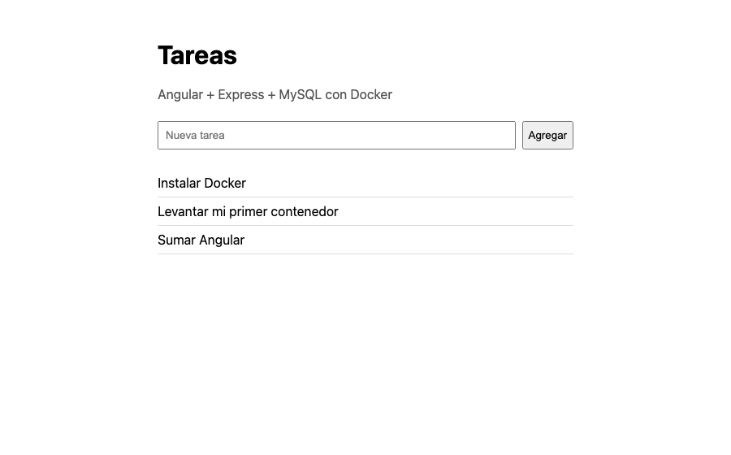

Docker desde cero
Lo esencial para que tu proyecto Express + MySQL (y Angular) funcione en cualquier compu con un solo comando.
Navegá con ← → · Índice con I
La ruta de hoy
Explicar, mostrar y practicar. Al final, vas a dockerizar tu propio proyecto.
Antes de empezar
Vos
- Docker instalado (lo hacemos en el bloque 2 si falta).
- VS Code y una terminal.
- Los ejemplos de la clase en tu compu:
git clone https://github.com/pedroibanez97/docker.gitVamos a usar las carpetas ejemplo y ejemplo-con-angular.
Docente
Descargá las imágenes antes de clase (la red del aula puede ser lenta):
docker pull hello-world
docker pull nginx:1.30-alpine
docker pull httpd:2.4-alpine
docker pull node:24-alpine
docker pull mysql:8.4¿Qué es Docker?
El problema que resuelve, en tres diapositivas.
Objetivo
Explicar con tus palabras para qué sirve Docker.
Tiempo
15 minutos · sin compu todavía
“En mi compu funciona…”
El código es el mismo. Lo que cambia es todo lo que hay alrededor: versiones, base de datos y configuración.
La idea de Docker
Docker mete tu app y todo lo que necesita en una caja que funciona igual en cualquier compu.
Como un contenedor de barco: el barco no necesita saber qué hay adentro. Si es una caja estándar, la puede llevar.
Antes y después
Sin Docker: el README de siempre
- Instalá Node (¿qué versión?)
- Instalá MySQL
- Creá la base y el usuario
- Ejecutá el script de tablas
- Armá el
.env npm installnpm start… y cruzá los dedos
Con Docker
git clone https://github.com/equipo/proyecto.git
cp .env.example .env
docker compose up -d --buildLo único que hay que instalar es Docker.
Preguntas rápidas
¿Docker reemplaza a Node, Express o MySQL?
No. Seguís usando lo mismo. Docker los ejecuta dentro de “cajas”.
¿Docker arregla los bugs de mi código?
No. Hace que el entorno sea igual en todos lados. Los bugs viajan con el código.
¿Es una máquina virtual?
No exactamente: es mucho más liviano y arranca en segundos. Para usarlo no hace falta saber más.
Instalar y probar
Ideal: hacerlo antes de la clase. En clase, solo verificamos.
Objetivo
Tener Docker funcionando y ejecutar tu primer contenedor.
Tiempo
10 minutos (más la descarga)
Instalá Docker
macOS
- Descargá Docker Desktop: elegí Apple silicon (chip M1, M2…) o Intel ( → Acerca de esta Mac).
- Arrastrá Docker a Aplicaciones.
- Abrilo y aceptá el acuerdo.
- Esperá a que diga Engine running.
Windows
- En PowerShell como administrador:
wsl --instally reiniciá. - Descargá e instalá Docker Desktop (dejá marcado WSL 2).
- Abrilo desde Inicio y aceptá el acuerdo.
- Esperá a que diga Engine running.
Requiere Windows 10 22H2 o 11, 64 bits, con virtualización activada.
Linux
- Seguí la guía oficial de tu distribución (en Ubuntu: “Install using the apt repository”).
- Para usarlo sin
sudo:sudo usermod -aG docker $USERy volvé a iniciar sesión.
Docker Desktop es gratis para estudiar y para uso personal.
¿Funciona?
Dónde En cualquier terminal: Terminal (macOS), PowerShell (Windows) o la de VS Code.
docker --version
docker compose versionQué hace Muestra la versión de Docker y de Docker Compose.
Docker version 28.5.1, build e180ab8 Docker Compose version v2.40.3-desktop.1
docker: command not found: cerrá y abrí de nuevo la terminal. Si sigue, Docker no quedó instalado.
Tu primer contenedor
Dónde En cualquier terminal.
docker run hello-worldQué hace Descarga una imagen de prueba y la ejecuta.
Unable to find image 'hello-world:latest' locally ... Hello from Docker! This message shows that your installation appears to be working correctly.
¿Qué pasó?
- Docker descargó la imagen
hello-world(por eso dice Unable to find… locally: no es un error). - Creó un contenedor con esa imagen.
- El contenedor mostró el mensaje y terminó.
Si no funciona
| Ves esto… | Hacé esto |
|---|---|
Cannot connect to the Docker daemon | Abrí Docker Desktop y esperá a que diga Engine running. En Linux: sudo systemctl start docker. |
| Windows: aviso sobre WSL | En PowerShell como administrador: wsl --update y reiniciá. |
| Windows: “Virtualization support not detected” | Activá la virtualización en la BIOS/UEFI (Intel VT-x o AMD-V). |
Linux: permission denied … docker.sock | Usá sudo o agregate al grupo docker y volvé a iniciar sesión. |
Imágenes y contenedores
Las dos palabras que más vas a usar, y los comandos del día a día.
Objetivo
Levantar un servidor web en un contenedor, verlo en el navegador y manejarlo.
Tiempo
25 minutos · con la compu
Imagen y contenedor
Imagen = la receta. Contenedor = la torta hecha con esa receta. Con una receta hacés muchas tortas.
Como en programación: la imagen es la clase y cada contenedor es un objeto creado con new.
Imágenes listas para usar
En Docker Hub hay imágenes oficiales de casi todo. No hace falta instalar nada en tu compu.
mysql:8.4
MySQL 8.4, listo para arrancar.
node:24-alpine
Node 24 sobre un Linux mínimo.
nginx:1.30-alpine
Un servidor web.
Se escriben nombre:versión. Usá siempre la versión: mysql:8.4, no solo mysql.
Un servidor web con un comando
Dónde En cualquier terminal.
docker run -d --name web -p 8080:80 nginx:1.30-alpineQué hace Crea y arranca un contenedor de nginx: -d en segundo plano, --name web le pone nombre, -p 8080:80 lo conecta a tu compu.
Resultado Abrí http://localhost:8080: aparece “Welcome to nginx!”.
port is already allocated o address already in use: el 8080 de tu compu está ocupado. Usá otro número a la izquierda: -p 8081:80.
Puertos: la puerta de entrada
-p 8080:80 se lee: “el 8080 de mi compu va al 80 del contenedor”. Izquierda: tu compu. Derecha: el contenedor.
¿Qué pasa si no ponés -p?
El contenedor funciona, pero desde tu compu no hay puerta para entrar.
Ver qué está pasando
Qué hace Lista los contenedores que están corriendo (-a: también los detenidos).
docker ps
docker ps -aIMAGE STATUS PORTS NAMES nginx:1.30-alpine Up 2 minutes 0.0.0.0:8080->80/tcp web
Qué hace Muestra lo que imprime el contenedor (sus mensajes y errores).
docker logs web... nginx/1.30.6 ... "GET / HTTP/1.1" 200 896 ...
¿Algo no anda? Primero mirá los logs. Ahí casi siempre está la respuesta.
Detener, iniciar y borrar
| Comando | Qué hace |
|---|---|
docker stop web | Lo detiene. El contenedor sigue existiendo (aparece en docker ps -a). |
docker start web | Lo vuelve a arrancar, igual que estaba. |
docker rm web | Lo borra (tiene que estar detenido). |
docker rm -f web | Lo detiene y lo borra en un paso. |
Si borrás un contenedor, se pierde lo que tenía adentro (la imagen queda). Por eso los datos de MySQL van a ir en un volumen (bloque 5).
Hacelo vos: tu servidor Apache
10 minutos. Usá la imagen httpd:2.4-alpine (Apache escucha en el puerto 80 del contenedor).
- Levantá un contenedor llamado
apache, en segundo plano, en el puerto 8081 de tu compu. - Abrilo en el navegador. ¿Qué dice?
- Mirá sus logs.
- Detenelo, volvé a iniciarlo y comprobá que sigue andando.
- Borralo (y borrá también
web).
Solución
docker run -d --name apache -p 8081:80 httpd:2.4-alpine
# navegador: http://localhost:8081 → "It works!"
docker logs apache
docker stop apache
docker start apache
docker rm -f apache webTu propia imagen: Dockerfile
Metemos una API de Express en una imagen.
Objetivo
Escribir un Dockerfile, construir la imagen y ejecutar tu API en un contenedor.
Material
Carpeta ejemplo/backend
Tiempo
25 minutos
Tu API no está en Docker Hub
Para tu propio código, la imagen la creás vos con una receta: el Dockerfile.
La API de ejemplo: un Express común
El código no sabe nada de Docker. Solo lee la conexión a la base desde process.env, como cualquier proyecto con .env.
import express from 'express';
import mysql from 'mysql2/promise';
const app = express();
app.use(express.json());
// Los datos de conexión llegan como variables de entorno (los pone Docker Compose)
const db = mysql.createPool({
host: process.env.DB_HOST, // en Docker: "db", el nombre del servicio
user: process.env.DB_USER,
password: process.env.DB_PASSWORD,
database: process.env.DB_NAME,
});
app.get('/', (req, res) => {
res.send('API funcionando');
});
app.get('/api/tareas', async (req, res) => {
const [tareas] = await db.query('SELECT * FROM tareas');
res.json(tareas);
});
app.post('/api/tareas', async (req, res) => {
const titulo = req.body?.titulo;
if (!titulo) return res.status(400).json({ error: 'Falta el título' });
const [resultado] = await db.query('INSERT INTO tareas (titulo) VALUES (?)', [titulo]);
res.status(201).json({ id: resultado.insertId, titulo });
});
// Si algo falla (por ejemplo, no hay conexión con MySQL), respondemos con el código del error
app.use((error, req, res, next) => {
console.error(error);
res.status(500).json({ error: error.code ?? error.message });
});
app.listen(3000, () => console.log('API escuchando en el puerto 3000'));
// Para que "docker stop" cierre la API al instante
process.on('SIGTERM', () => process.exit(0));El Dockerfile, línea por línea
FROM node:24-alpine
WORKDIR /app
COPY package*.json ./
RUN npm ci
COPY . .
CMD ["node", "src/index.js"]FROM: partí de una imagen que ya tiene Node 24.WORKDIR: trabajá en la carpeta/app(adentro del contenedor).COPY package*.json: copiá la lista de dependencias.RUN npm ci: instalá las dependencias.COPY . .: copiá el resto del código.CMD: al arrancar, ejecutánode src/index.js.
El archivo se llama Dockerfile, sin extensión, y va en la carpeta del backend, junto a package.json.
.dockerignore: lo que no va en la imagen
node_modules
.envnode_modules: las dependencias se instalan adentro connpm ci..env: tus contraseñas no tienen que quedar guardadas en la imagen.
Es como el .gitignore, pero para Docker.
Construir la imagen
Dónde En la carpeta ejemplo/backend (donde está el Dockerfile).
docker build -t mi-api .Qué hace Sigue la receta y crea una imagen llamada mi-api. El punto final significa “esta carpeta”.
=> [1/5] FROM docker.io/library/node:24-alpine => [2/5] WORKDIR /app => [3/5] COPY package*.json ./ => [4/5] RUN npm ci => [5/5] COPY . . => => naming to docker.io/library/mi-api
failed to read dockerfile: open Dockerfile: no such file or directory: estás en otra carpeta. Entrá con cd ejemplo/backend.
Ejecutar tu API
Dónde En cualquier terminal.
docker run -d --name mi-api -p 3000:3000 mi-api
docker logs mi-apiQué hace Crea un contenedor con tu imagen y lo conecta al puerto 3000 de tu compu.
API escuchando en el puerto 3000
Resultado http://localhost:3000 muestra “API funcionando”.
/api/tareas todavía responde {"error":"ECONNREFUSED"}: no hay base de datos. La sumamos con Compose en el bloque 5.
Cambié el código… ¿y no se ve?
La imagen es una foto de tu código del momento en que la construiste. Si cambiás el código, hay que construirla de nuevo.
Dónde En ejemplo/backend.
docker build -t mi-api .
docker rm -f mi-api
docker run -d --name mi-api -p 3000:3000 mi-apiQué hace Nueva imagen, borra el contenedor viejo y crea uno nuevo.
Con Compose (bloque 5) esto se hace con un solo comando: docker compose up -d --build.
Hacelo vos: tu versión de la API
10 minutos, en ejemplo/backend.
- Construí la imagen y ejecutala en el puerto 3000.
- En
src/index.js, cambiá'API funcionando'por un mensaje tuyo. - Hacé que se vea el cambio en
http://localhost:3000. - Extra: ejecutá otro contenedor de la misma imagen en el puerto 3001. ¿Qué número cambia en
-p?
Solución
docker build -t mi-api .
docker rm -f mi-api
docker run -d --name mi-api -p 3000:3000 mi-api
# extra: cambia solo el número de la izquierda
docker run -d --name mi-api-2 -p 3001:3000 mi-apiCompose: tu API + MySQL
La API, la base y los datos, levantados juntos con un comando.
Objetivo
Levantar API + MySQL con Compose, usando variables de entorno y sin perder los datos.
Material
Carpeta ejemplo
Tiempo
40 minutos
Una app real tiene varias piezas
Docker Compose describe todas las piezas en un archivo y las levanta con un comando.
El proyecto completo
Es la misma estructura que vas a armar en tu proyecto:
compose.yamly.env.exampleen la raíz.- Un
Dockerfileen la carpeta del backend. - Tus scripts
.sqlen una carpetadb.
compose.yaml (1): la base de datos
services:
db:
image: mysql:8.4
environment:
MYSQL_ROOT_PASSWORD: ${DB_ROOT_PASSWORD}
MYSQL_DATABASE: ${DB_NAME}
MYSQL_USER: ${DB_USER}
MYSQL_PASSWORD: ${DB_PASSWORD}
volumes:
- datos-mysql:/var/lib/mysql # acá se guardan los datos (no se pierden)
- ./db:/docker-entrypoint-initdb.d # scripts .sql que se ejecutan la primera vez
ports:
- "3307:3306" # para verla con Workbench desde tu compu
healthcheck: # avisa cuando MySQL está listo
test: ["CMD", "mysqladmin", "ping", "-h", "127.0.0.1"]
interval: 5s
retries: 20image: usa la imagen oficial de MySQL.environment: crea la base y el usuario. Los valores salen del archivo.env.volumes: dónde guardar los datos y qué scripts ejecutar al crear la base.ports:3307para no chocar con un MySQL instalado en tu compu.healthcheck: bloque para copiar tal cual. Avisa cuando MySQL terminó de arrancar.
compose.yaml (2): tu API
backend:
build: ./backend
ports:
- "3000:3000"
environment:
DB_HOST: db # el nombre del servicio, NO localhost
DB_USER: ${DB_USER}
DB_PASSWORD: ${DB_PASSWORD}
DB_NAME: ${DB_NAME}
depends_on:
db:
condition: service_healthy # espera a que MySQL esté listo
volumes:
datos-mysql:build: construye la imagen con el Dockerfile de./backend.ports: la API enlocalhost:3000.environment: las variables que lee tu código conprocess.env.DB_HOST: db: la API encuentra a MySQL por el nombre del servicio.depends_on: no arranca hasta que MySQL esté listo.volumes(al final): crea el volumen de datos.
Variables de entorno: las claves van en .env
# Copiá este archivo como .env y cambiá las claves.
# El archivo .env NO se sube a GitHub.
DB_ROOT_PASSWORD=cambiar-clave-root
DB_NAME=tareas_db
DB_USER=app
DB_PASSWORD=cambiar-clave-appDónde En la carpeta ejemplo.
cp .env.example .envQué hace Crea tu .env a partir de la plantilla. Después cambiá las claves.
Qué se sube a GitHub y qué no
| Archivo | ¿A GitHub? |
|---|---|
Dockerfile, compose.yaml | Sí |
.env.example (claves de mentira) | Sí |
.env (tus claves) | Nunca |
node_modules | No |
.env
node_modulesSi subiste un .env por error, cambiá esas contraseñas. Borrar el archivo después no alcanza: queda en el historial.
Levantar todo
Dónde En la carpeta ejemplo (donde está compose.yaml).
docker compose up -d --build
docker compose psQué hace Construye la API, descarga MySQL y arranca todo en segundo plano. ps muestra cómo están.
SERVICE STATUS PORTS backend Up 3 seconds 0.0.0.0:3000->3000/tcp db Up 9 seconds (healthy) 0.0.0.0:3307->3306/tcp
Resultado http://localhost:3000/api/tareas devuelve las tareas guardadas en MySQL:
[{"id":1,"titulo":"Instalar Docker"},{"id":2,"titulo":"Levantar mi primer contenedor"}]Probar la API: crear una tarea
Dónde En cualquier terminal (o con Postman / Thunder Client: POST a http://localhost:3000/api/tareas).
curl -X POST -H "Content-Type: application/json" -d '{"titulo":"Aprender Compose"}' http://localhost:3000/api/tareasInvoke-RestMethod -Method Post -Uri http://localhost:3000/api/tareas -ContentType 'application/json' -Body '{"titulo":"Aprender Compose"}'Qué hace Envía una tarea nueva a la API, que la guarda en MySQL.
{"id":3,"titulo":"Aprender Compose"}Dentro de Docker, localhost no es tu compu
Cada contenedor es su propia compu. La API encuentra a MySQL por el nombre del servicio: db.
Con DB_HOST: localhost, /api/tareas responde {"error":"ECONNREFUSED"}. Es el error más común al dockerizar.
Los datos de MySQL: el volumen
El volumen es la baulera del edificio: aunque vacíes o cambies el departamento (el contenedor), lo que está en la baulera queda.
docker compose down | Los datos quedan |
docker compose down -v | ⚠ Borra los datos |
¿Siguen los datos?
Dónde En la carpeta ejemplo, después de crear la tarea “Aprender Compose”.
docker compose down
docker compose up -dQué hace Borra los contenedores y los vuelve a crear. El volumen no se toca.
Resultado En /api/tareas sigue estando “Aprender Compose”.
docker compose down -v borra también el volumen: se pierden todos los datos y la base vuelve a empezar con el script inicial.
Usalo solo cuando quieras empezar de cero a propósito.
Tus tablas: scripts SQL iniciales
-- Se ejecuta solo la primera vez que se crea la base
CREATE TABLE tareas (
id INT AUTO_INCREMENT PRIMARY KEY,
titulo VARCHAR(200) NOT NULL
);
INSERT INTO tareas (titulo) VALUES ('Instalar Docker'), ('Levantar mi primer contenedor');- Todo archivo
.sqlde la carpetadbse ejecuta cuando MySQL crea la base. - Solo la primera vez: cuando el volumen está vacío.
- En tu proyecto, poné acá el script que ya usás para crear tus tablas.
“Cambié el script y no pasa nada”: la base ya existía. En desarrollo, docker compose down -v y up -d la recrea (borrando los datos).
Ver la base con Workbench
| Nueva conexión (MySQL Workbench, DBeaver o VS Code) | |
|---|---|
| Host | 127.0.0.1 |
| Puerto | 3307 |
| Usuario | app (o el de tu .env) |
| Clave | la de DB_PASSWORD en tu .env |
| Base | tareas_db |
Ves la tabla tareas con los datos que cargaste desde la API.
Access denied usando el puerto 3306: te conectaste al MySQL instalado en tu compu. El de Docker está en el 3307.
Los comandos de Compose
Siempre en la carpeta donde está compose.yaml.
| Comando | Para qué |
|---|---|
docker compose up -d --build | Construir y levantar todo (usalo también después de cambiar código) |
docker compose ps | Ver cómo está cada servicio |
docker compose logs -f backend | Ver los mensajes de la API en vivo (Ctrl+C para salir) |
docker compose stop / start | Detener / volver a iniciar, sin borrar nada |
docker compose down | Borrar los contenedores (los datos quedan) |
docker compose down -v | ⚠ Borrar también los datos |
Hacelo vos: API + MySQL
15 minutos, en la carpeta ejemplo.
- Creá el
.envy levantá todo. Esperá a verdbcomo(healthy). - Creá dos tareas y comprobá que aparecen en
/api/tareas. - Conectate con Workbench y buscalas en la tabla.
- Bajá todo con
downy volvé a levantarlo. ¿Siguen? - Cambiá el mensaje de
/enbackend/src/index.jsy aplicalo.
Solución
cp .env.example .env
docker compose up -d --build
docker compose ps
# crear tareas con curl, PowerShell o Postman
docker compose down
docker compose up -d # las tareas siguen
# después de cambiar el código:
docker compose up -d --buildSumar Angular
Un servicio más en el mismo compose.yaml.
Objetivo
Entender cómo se suma el frontend y cómo llama a la API.
Material
Carpeta ejemplo-con-angular
Tiempo
15 minutos
Angular en Docker: compilar y servir
Docker hace el ng build y Nginx sirve los archivos. Nginx también pasa las llamadas a /api al backend.
Una cocina y un mostrador: en la cocina (Node) se prepara la app; al mostrador (Nginx) solo llega el plato terminado.
Angular llama a /api
// URL relativa: el navegador se la pide a Nginx, y Nginx se la pasa al backend
private apiUrl = '/api/tareas';El código de Angular corre en el navegador, fuera de Docker. Por eso no puede usar http://backend:3000.
http://backend:3000/api en Angular: el navegador no conoce ese nombre y la llamada falla.
/api/tareas: el navegador se lo pide al mismo lugar de donde bajó Angular (Nginx), y Nginx se lo pasa al backend.
Los dos archivos del frontend
# Paso 1: compilar Angular (como hacer "ng build")
FROM node:24-alpine AS build
WORKDIR /app
COPY package*.json ./
RUN npm ci
COPY . .
RUN npm run build
# Paso 2: servir los archivos compilados con Nginx
FROM nginx:1.30-alpine
COPY nginx.conf /etc/nginx/conf.d/default.conf
COPY --from=build /app/dist/frontend/browser /usr/share/nginx/htmlserver {
listen 80;
root /usr/share/nginx/html;
# Las llamadas a /api/... se pasan al backend ("backend" es el nombre del servicio)
location /api/ {
proxy_pass http://backend:3000;
}
# Todo lo demás es la aplicación Angular
location / {
try_files $uri $uri/ /index.html;
}
}dist/frontend/browser: cambiá frontend por el nombre de tu proyecto Angular (lo ves al ejecutar ng build, en la línea Output location).
Levantar la app completa
frontend:
build: ./frontend
ports:
- "8080:80" # la app completa: http://localhost:8080
depends_on:
- backendDónde En la carpeta ejemplo-con-angular.
cp .env.example .env
docker compose up -d --buildResultado http://localhost:8080: la app lista las tareas y permite agregar nuevas.

Llevarlo a otra compu o a un servidor
Para esto sirve todo lo anterior.
Objetivo
Ver por qué Docker facilita compartir y publicar un proyecto.
Tiempo
10 minutos
A la compu de otra persona
No hace falta instalar Node ni MySQL, ni crear la base a mano: todo está escrito en el proyecto.
A un servidor
Un servidor es otra compu (con Linux) que está siempre prendida. La idea es la misma.
- En el servidor se instala Docker.
- Se trae el proyecto:
git clone … - Se crea el
.envcon claves nuevas y fuertes (nunca las de ejemplo). docker compose up -d --build
Para que la use otra gente faltan un dominio y HTTPS. Eso lo configura quien administra el servidor; no es parte de esta clase.
En un servidor, sacá el ports de db: la base no tiene que quedar abierta a Internet. La API la sigue viendo por la red interna.
Si algo falla
Los errores que más vas a ver y cómo salir de ellos.
Objetivo
Diagnosticar con dos comandos antes de cambiar nada.
Tiempo
10 minutos (y como referencia durante la práctica)
Primero, mirá
Dónde En la carpeta de compose.yaml.
docker compose ps -a
docker compose logs backendQué hace ps -a: qué servicio está caído (Exited). logs: el mensaje de error exacto.
Leé el error antes de cambiar algo. Casi siempre dice qué pasa.
Los errores más comunes
| Ves esto… | Hacé esto |
|---|---|
Cannot connect to the Docker daemon | Abrí Docker Desktop y esperá a que arranque. |
port is already allocated / address already in use | Ese puerto de tu compu está ocupado: cambiá el número de la izquierda en ports. |
The "DB_PASSWORD" variable is not set y dependency failed to start | Falta el .env: cp .env.example .env. |
La API responde {"error":"ECONNREFUSED"} | La API usa localhost para la base: tiene que ser DB_HOST: db. |
| Cambié el código y no veo el cambio | docker compose up -d --build |
| Desaparecieron los datos | ¿Usaste down -v? Sin -v, los datos quedan. |
Access denied for user después de cambiar claves en .env | MySQL guarda las claves de la primera vez. En desarrollo: docker compose down -v y up -d (borra los datos). |
Repaso
Todo en un dibujo, un machete de comandos y un cuestionario rápido.
Objetivo
Confirmar que se entendió antes de la práctica.
Tiempo
10 minutos
Todo en un dibujo
Imagen
La receta. La creás con un Dockerfile.
Contenedor
La app funcionando. Se puede borrar y recrear.
Puerto
tu compu:contenedor
Volumen
Donde quedan los datos de MySQL.
Machete de comandos
Contenedores sueltos
docker run -d --name web -p 8080:80 nginx:1.30-alpine
docker ps -a # ver contenedores
docker logs web # ver mensajes
docker stop web # detener
docker start web # volver a iniciar
docker rm -f web # borrar
docker build -t mi-api . # crear tu imagenCon Compose (en la carpeta del proyecto)
cp .env.example .env # una sola vez
docker compose up -d --build # levantar / aplicar cambios
docker compose ps # ver estado
docker compose logs -f backend # ver mensajes
docker compose stop # detener
docker compose start # volver a iniciar
docker compose down # borrar contenedores (datos quedan)Cuestionario rápido
Elegí una opción para ver la respuesta.
¿Qué es un contenedor?
- La receta de la app
- La app funcionando, creada a partir de una imagen
- Una carpeta de tu proyecto
La receta es la imagen. El contenedor es la app corriendo a partir de esa imagen.
En -p 3001:3000, ¿cuál es el puerto de tu compu?
- 3001
- 3000
Izquierda: tu compu. Derecha: el contenedor.
En Compose, ¿qué host usa la API para conectarse a MySQL?
localhostdb, el nombre del servicio
Dentro de un contenedor, localhost es el mismo contenedor.
Cambiaste el código de la API. ¿Qué ejecutás?
docker compose startdocker compose up -d --build
La imagen tiene el código viejo: hay que construirla de nuevo.
¿Qué comando borra los datos de MySQL?
docker compose downdocker compose down -v
Sin -v, el volumen con los datos queda.
¿Qué archivo nunca se sube a GitHub?
.env.example.envcompose.yaml
.env tiene tus claves reales. .env.example es la plantilla sin secretos.
Dockerizá tu proyecto
Que tu proyecto se levante con docker compose up -d --build en cualquier compu.
Tenés que poder
- Levantarlo con un comando
- Mostrar que funciona
- Explicar cómo se comunican sus partes
Con qué
Tu proyecto Express + MySQL (con o sin Angular). Si no podés usarlo, el proyecto base.
Tiempo
1 h 30 min a 3 h · individual o en parejas
Paso a paso
- Creá una rama:
git switch -c docker - Copiá
Dockerfiley.dockerignoredeejemplo/backenda tu backend. - Copiá
compose.yamly.env.exampledeejemploa la raíz de tu proyecto. - Poné tu script de tablas en
db/. - Adaptá tu código (siguiente diapositiva).
cp .env.example .envydocker compose up -d --build
No reescribas tu proyecto. Docker se agrega alrededor: tus rutas, controladores y servicios quedan como están.
Revisá en compose.yaml: la carpeta en build (por ejemplo ./backend o ./server) y el puerto en que escucha tu API.
Adaptá tu código
1. La conexión a MySQL, con variables
const db = mysql.createPool({
host: process.env.DB_HOST, // en Docker: "db", el nombre del servicio
user: process.env.DB_USER,
password: process.env.DB_PASSWORD,
database: process.env.DB_NAME,
});Buscá en tu código 'localhost', 'root' o tu contraseña escritos a mano, y reemplazalos por process.env.….
2. El arranque
En el CMD del Dockerfile poné tu archivo de entrada (por ejemplo src/app.js o index.js). El puerto de app.listen tiene que ser el de la derecha en ports.
3. Angular (si llegás)
Copiá Dockerfile y nginx.conf de ejemplo-con-angular/frontend y el servicio frontend del compose. Usá /api como URL de la API.
Si tu Angular usa http://localhost:3000/api y tu backend tiene CORS, también funciona en tu compu. Para un servidor, conviene /api.
Explicá cómo se comunica tu proyecto
Dibujalo (en papel o en tu README) y respondé estas preguntas:
- ¿Qué dirección abrís en el navegador?
- ¿Cómo llega una petición al backend?
- ¿Con qué host y puerto se conecta el backend a MySQL? ¿Por qué no
localhost? - ¿Dónde se guardan los datos y qué pasa con ellos si hacés
docker compose down?
Alternativa: el proyecto base
Si no podés usar tu proyecto: una API chica de biblioteca (Express + MySQL), todavía sin Docker.
Hacé los mismos pasos que con tu proyecto. Pistas:
- En
.env:DB_NAME=biblioteca(el nombre que usa el script). - El script está en
db/: la misma carpeta del ejemplo. - El backend es la carpeta misma: en el compose,
build: . - Probá
GET /api/libros: tienen que aparecer 4 libros.
Antes de entregar
- Se levanta con
docker compose up -d --build. - Los endpoints principales responden.
- Un dato creado sigue después de
docker compose downyup -d. - El
.envno está en GitHub;.env.examplesí. - El README dice cómo levantarlo (los 3 comandos).
- Podés explicar el dibujo de la diapositiva anterior.
Qué se evalúa
- Funciona: levanta y responde.
- Datos: no se pierden al recrear.
- Claves: en
.env, fuera de GitHub. - Explicación: cómo se comunican las partes.
La prueba final: que otra persona clone tu repo y lo levante siguiendo solo tu README.
¡Listo!
Docker no cambia cómo programás. Cambia lo fácil que es que tu proyecto funcione en cualquier lado.
Guía de estudio
PDF con los conceptos, comandos y archivos.
Ejemplos
Repositorio: carpetas ejemplo y ejemplo-con-angular.
Para profundizar
Versión completa de esta clase, con más detalle.